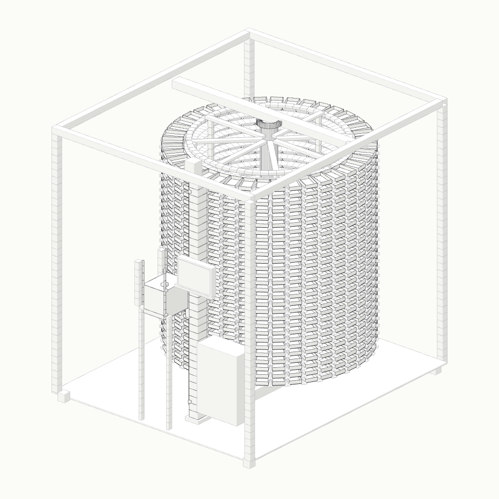
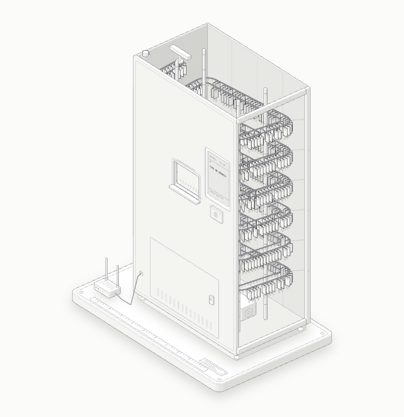
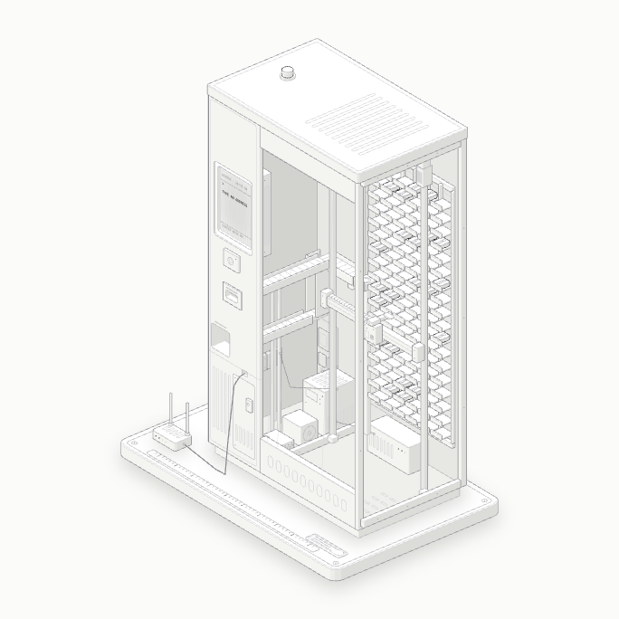
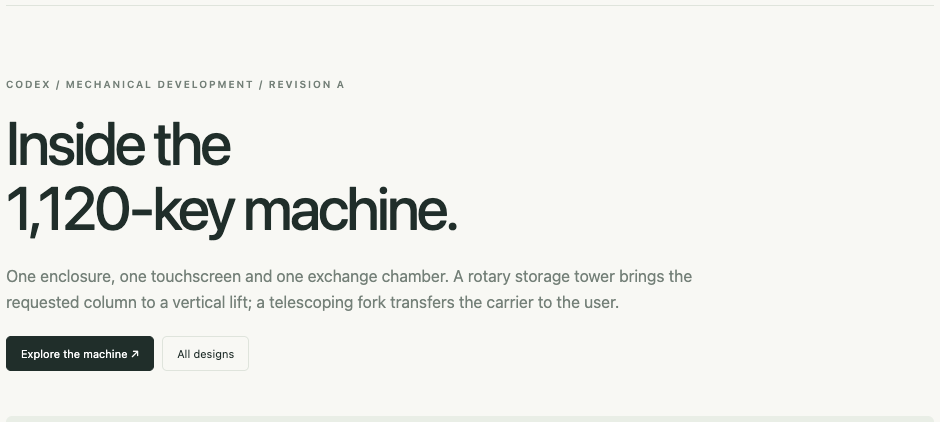

KEYPORT 1120
A rotary tower, a vertical lift and a telescoping fork. All 1,120 carriers share one enclosure and one exchange port.
1,120key positions
1machine
6inspection poses
CAD development model · Read the engineering notes
A collection of machine designs for finding, returning and storing property keys. Explore the mechanisms, side by side.

A rotary tower, a vertical lift and a telescoping fork. All 1,120 carriers share one enclosure and one exchange port.
CAD development model · Read the engineering notes

A moving rail carries key tags around a continuous path to one access window. The concept models 1,182 hooks.

A compact study of address search, storage pockets and automated pickup. An earlier exploration of the storage and retrieval workflow.

Dimensions, motion sequence, CAD checks and the work needed before fabrication.